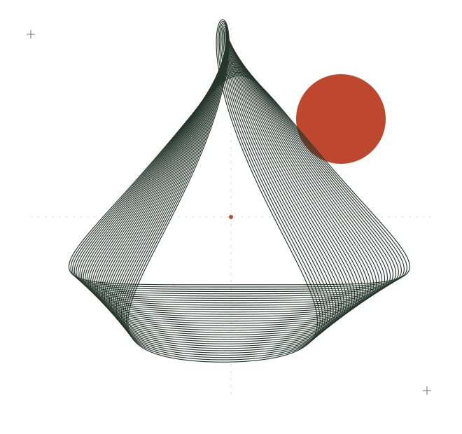
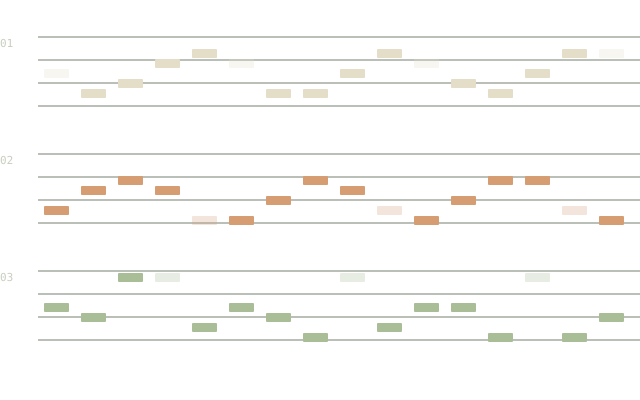

An independent music project
Cancelled
Futures.
Music, and ways into it.
Recordings to listen to. Tools to make something of your own.

01 / MusicCancelled Futures
Start with
a listen.
The music lives on Bandcamp. Explore the recordings, spend some time with a track, and find something to come back to.
Explore the music on Bandcamp02 / Music-making toolsIn development
For curious ears
Meet Unfold.
A generative music studio for Mac. Start with a phrase, bring in other voices, and hear where they lead.
Try patterns and sounds while the music plays. Keep an idea you like. Record what happens.
Explore UnfoldFree & open source · Mac release in preparation

One idea. Several possibilities.Listen closely.
Leave something open.